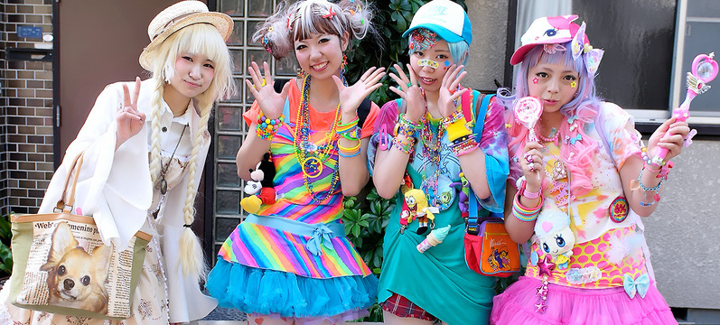
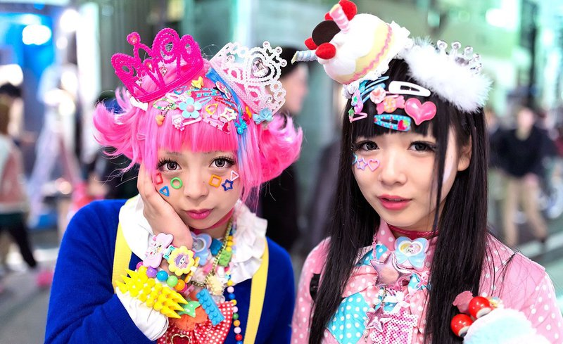

Harajuku: A first-timer’s guide to one of Tokyo’s most famous neighborhoods
CNN — Atop almost every Tokyo visitor’s must-see list, Harajuku is one of the city’s most name-checked neighborhoods.
Takeshita Street

Cat Street
Omotesando Avenue
Meiji Shrine
What to eat
Where to Stay Trunk Hotel, 5 Chome-31 Jingumae, Shibuya City, Tokyo 150-0001, Japan; +81 3-5766-3210